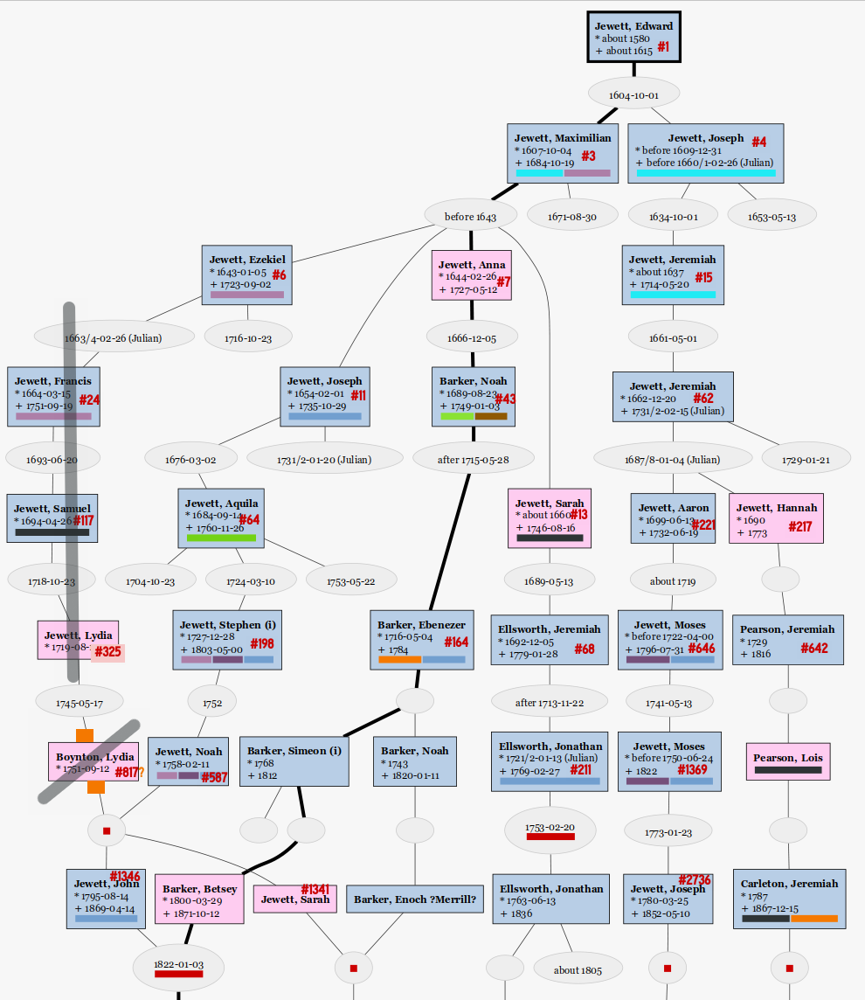

© 2023, 2024
This page reports my tangled Jewett pedigree, noting additional Descendants (non-living only) of Jewetts of America (OpenLibrary) volumes 1 & 2 persons therein. (Hereafter referred to as JoA and the numbering there as J#.)
As far as I know (AFAIK), none of the un-numbered persons listed here were in the Newsletters, Quarterly, or Annual publications of the society. (If JoA society newsletter editor would like this reformatted for newsletter, i would consider - and will also share further details with the Historian.)
Siblings and/or parents of two numbered ancestors mentioned here do appear in Newsletter/Quarterly articles, but not discussing the un-numbered ancestors given here, as noted below.
I’ve made my own index of Vols 3 & 4 clusters, and i have verified none of those newly numbered clusters match these un-numbered lines. Though several are adjacent:

Numbers that are prefixed with J# (pr prefixed with only # in chart above) are Jewetts of America numbers from those books, which books are referred to as JoA.
Other family descendency ids provided as Cross-Reference are identified when used and listed in Bibliography.
Jewett Descent Generation numbers are shown in circles ⑨ in the descent outline. These are usually given as superscripts9 in most other family genealogies, but the JoA books use the descent number as superscript, ala Aquila64, Maximilian3; which I will use here only when quoting the JoA known descent. Generations from other families’ progenitor are shown conventionally as Noah5 Barker.
(William H.2692, John1346, Noah587, Stephen198, Aquila64, Joseph11, Maximilian3, Edward1) [JoA:i:459,JoA:ii:697]
(b. 1857-06-07 - Double Branch, GA, d. 1941-12-20)
sp. Ricker, Albion (Allie) Swett (b. 1857-12-07 - Turner, ME, Androscoggin Co, Maine, USA, d. 1914-08-14 - Turner, ME, Androscoggin Co, Maine, USA),
Cross-Reference — Ricker#4892 (in Ricker Gen.).
🟥 Note that Forence’s paternal grandfather ⑦ J#1346 John Jewett’s wife Betsey Barker under J#164 Ebenezer q.v. is his fourth cousin, of Jewett descent: Betsey5 Barker, Simeon4, Ebenezer3, Noah2, Barzilla1 Barker m. ③ J#7 Anna (Hannah) Jewett (Barker), dau. of ② J#3 Maximilian, so that their children have doubled Jewett.
3 children, enumerated at loc.cit. but not expanded in JoA:
(b. 1880-11-21, d. 1906-08-04) obit
sp. Mitchell, Arthur Albert (b. 1880, d. 1914), obit;
m. 1902-12-17
JoA listed as ONE child, no J#; actually two sons; Arthur A had probably 3 more chn. by his m.2 Cora May Irish, per obit; and she remarried also (his m.2 of 3), per F-a-G, into one of the other two major Apple Orchardist families in town.
Mitchell, Alfred Ricker (b. 1905-01-09, d. 1961) obit; sp. Ayles, Marion E (Morris) (d. 1991), m. 1925-05-09
Mitchell, Donald Bates (b. 1906-08-02, d. 1988) Obit sp. Bailey, Grace L (Forster) (b. 1909, d. 2000) obit;
(b. 1883-07-08 - Turner, ME, Androscoggin Co, Maine, USA, d. 1964-02-26 - Turner, ME, Androscoggin Co, Maine, USA) (F-a-G)
sp. Barker, Mary “Maisie†Alice (b. 1884-04-15, d. 1979), (F-a-G) (💮 Cooke, via Burgess)
🟥 Mary is also desc of J#587 Deacon Noah Jewett, via J#1341 Sarah/Sally Jewett (Barker), who had married Enoch (Enoch Merrill?) Barker, her fourth cousin via J#7 (H)Anna(h) Jewett (Barker), so Mary and Will were 3d Cousins by Jewett, 4th by Barker from J#64 Ebenzer Barker, etc.
Cross-Reference — Ricker#9675
2 children:
(b. 1907-05-31 - Ricker Hill, Turner, ME, Androscoggin Co, Maine, USA, d. 2001-03-11 - Lewiston, Androscoggin, ME, Androscoggin Co, Maine, USA) (F-a-G)
sp. Field, Mabel Klose (b. 1908-02-25 - Sheffield, Berkshire Co MA, d. 1998-10-03), (💮 Warren) (F-a-G); middle name sometimes spelt ‘Close’ but VR says Klose;
Cross-Reference — - Ricker#15716.
3 children:
(b. 1908-09-15, d. 1990-11-24 - Auburn, Androscoggin Co, Maine, USA)
sp. Boothby, Laurence Bizzell (b. 1908-11-04, d. 1998-06-06 - Auburn, Androscoggin Co, Maine, USA), ( 💮 Cooke Howland Bradford Brewster Allerton)
multiple children, of whom most are living; two alas are share-able:
(b. 1887-07-07, d. 1927-10-06) (F-a-G)
sp. Hatch, Emery Bunker Newton “Dick†(b. 1889-06-28, d. 1983-09-14 - Rockport ME) (F-a-G),
he (m.2) Katherine Devlin (F-a-G)
4 children:
(Deac. Noah587, Stephen198, Aquila64, Joseph11, Maximilian3, Edward1) [JoA:i:165]
sister of John #1346 mentioned below
sp. Barker, Enoch ?Merrill?
🟥 Enoch M was her 4th cousin, via J#7 Anna (Hannah) Jewett (Barker), dau. of . of ② J#3 Maximilian (line: Enoch M6, Noah5, Ebenezer4, Noah3, Barzilla2 Barker (m. ③ J#7 (H)Anna(h) Jewett), James1 Barker). J#43 Noah3 Barker#20 is covered as below.
Cross-Reference_ — Barker#79 Noah5 & #150 Enoch6.
 • • • Updates for one child, IDK if there are others:  • • •
(b. 1822-10-23 - Cornish, York, ME, d. 1891-05-19 - Wayne, ME, Kennebec Co, ME) (F-a-G), obit,
sp. (m.1) Small, Mary A(nn) (b. 1820-09-18 - Limington, York Co, ME, d. 1854-09-01 - Wayne, Kennebec Co, ME), (F-a-G)
sp. (m.2) Small, Abbie C (b. 1825-12-12 - Limington, York Co, ME, d. 1879-08-04) (F-a-G),
5 children (Bowdoin Col. obit seemingly under-counted!, “leaving†probably meaning surviving children, for which “1 each†is alas correct, only first and last grew to adulthood.):
(b. 1852-08-15, d. 1937-08-08) (F-a-G)
Dentist
sp. Burgess, R Louise (b. 1854-11-24, d. 1909-09-15), (💮 Cooke)
3 children:
⑩ 1. Barker, Mary (Maisie) Alice (b. 1884-04-15, d. 1979), 💮
married 🟥 her 3d Cousin J#7033
William Jewett Ricker, q.v..
(Common ancestors J#587 Deacon Noah & Lydia (Boynton)
Jewett).
⑩ 2. Barker, Albion “Al†C. (b. 1885, d. 1973) 💮 (F-a-G)
married, no issue. Senior electrical engineer for growing power company.
nm; no issue; school teacher in Salem, MA.
last child of (m.1) Mary Ann, who died same day.
first child of (m.2) Abbie C Small.
sp. Arris, Frank Harold (b. 1859-08-17, d. 1924-05-26)
1 child:
sp. Rawstron, Albert Victor (b. 1882-05-24, d. 1942-01-11)
(David4697, Joseph2736, Moses1369, Moses646, Aaron221, Jeremiah69, Jeremiah15, Joseph4, Edward1) [JoA:ii:708,915]
(b. 1848, d. 1922)
sp. Shea, Emma Mary (b. 1858, d. 1952),
Emma Mary Shea (Jewett), wife of J#7151 David Jewett is supposedly also of Jewett Descent, from J#642 Jeremiah Pearson; the supposed line given below, q.v.
This family is mentioned in JoA 1998 Quarterly article, issue no.2, “Jewett Families Buried at Whitefield Cemetery†, Barbara Jewett Shaw for the burial of the parents and siblings of my ancestors; our gal is buried with her in-laws in Alna, so not mentioned in that article.
3 Children.
(b. 1884-06-13 - Alna, Lincoln Co, ME, d. 1971-01-17 - Maine) (F-a-G) has errors reported.
sp. Walker, George Wilmot (b. 1884-05-04 - Alna, Lincoln Co, ME d. 1964-08-27 - Rockland, Knox Co, ME), (💮 Doty)
3 children:
(b. 1908-02-14 - Alna, Lincoln Co, ME, d. 1992-02-07, Maine) (F-a-G) has errors reported.
sp. Dow, George Farrington (💮 Cooke+Hopkins) (b. 1905-07-22 - South Portland, Cumberland Co, ME, d. 2006-06-08 - Damariscotta, Lincoln Co, ME), (F-a-G) has errors reported.
George F Dow is of Jewett Descent via J#612 Jonathan Ellsworth below, q.v.
3 children:
(b. 1919-11-15 Maine, d. 1940-10-26 - Leyte, Philippines; WW2; USA 1LT CAC(AAA)) (F-a-G): marker in family plot (F-a-G): bu. Manilla
nm, no issue.
(b. 1909-11-26 - Alna, Lincoln Co, ME, d. 1995-10-16)
sp. Childs, Nellie Burkett aka “Nell†(b. 1911-04-28 - Needham, Norfolk Co, MA, d. 1998-10-30 - Waldoboro, Lincoln Co, ME)
no additional info, as yet
no additional info, as yet
More of my Jewett lines, discussed more briefly.
(Jeremiah69, Jeremiah15, Joseph4, Edward1) [JoA:i:49,91-92]
sp. LT Stephen Pearson (jr);
Lt. Stephen and Hannah (Jewett) Pearson (J#217) are mentioned in Jewett Family America Quarterly, 1999 No.2 article correcting Vol. III, Cluster 645, [iii:154], regarding illegitimate and consanguineous parentage of J#10207 James Jewett, husband of their daughter J#638 Mary Pearson; citing The Maine Genealogist.
As noted above, there is a web genealogy with a Jewett line from this Jeremiah to the wife of J#7151 David Jewett q.v.
⚠WARNING: I have not verified this line found on the web myself, yet. The connections between Pearson and Carleton are quite plausible as the families were professionally connected in construction and operation of mills in both Essex Co and Lincoln Co. Exactly which Carl(e)ton is father of which of the consanguineous Carleton-Carleton match is recorded differently some places; TBD! Descent is supposedly from Jeremiah’s dau. Lois thusly:
If this Pearson-Carelton line is correct, Emma M Shea and David N Jewett are 🟥 5th cousins from ④ J#69 Jeremiah Jewett.
(Anna7, Maximilian3, Edward1), [JoA:i:22-23,45]
(b. 1689-08-23 - Rowley, Essex Co, MA, d. 1749-01-03 - Stratham, Rockingham Co, NH)
sp. Figgett, Martha (b. 1696-08-23, d. 1772-12-18),
Cross-Reference — Barker#20 Noah3.
 • • • ⑤ multiple children of whom we follow only one.  • • •
who is common Barker ancestor of 🟥 J#7033 Will Ricker and Mary Barker, as well as father of this line.
(b. 1716-05-04 - Ipswich, Essex Co, MA, d. 1784 - Stratham, Rockingham Co, NH)
sp. Rundlett, Mary (b. calculated about 1721, d. 1791-09-14)
Cross-Reference — Barker#35 Ebenezer4.
⚠ WARNING: I have some slight caveats on the connections of J#164 Ebenezer Barker and reported wive(s); and also identifying Enoch Merrill Barker & Enoch Barker as the same person; these seem sound but more TBD.
 • • • ⑥ Multiple children, of whom we follow only 2:  • • •
(b. 1768 - Stratham, Rockingham Co, NH, d. 1812 - Limerick, York Co, ME)
sp. Rundlette, Hannah (b. 1768, d. 1832-05-05 - Limerick, York Co, ME)
Cross-Reference — Barker#85 Simeon5
Hannah Rundelette must be some sort of 🟥 cousin or even niece of her mother-in-law Mary Rundlett but TBD quite how.
Children:
(b. 1743 - Stratham, Rockingham Co, NH, d. 1820-01-11 - Cornish, York Co, ME)
sp. Merrill, ?Susannah?
Cross-Reference — Barker#79 Noah5.
Children:
(Jonathan211, Jeremiah^68, Sarah13, Maximilian3, Edward1) [JoA:i:90]
JoA says only
born June 13, 1763. Settled in Avon, Me.
as 5th of 7 siblings.
Ellsworth genealogy p.96 Jonathan^3 (sr) has same 7 siblings.
(b. 1763-06-13 - Rowley, Essex Co, MA, d. 1836 - Avon, Franklin Co, ME,)
sp. (m.1) Storer, Esther (b. about 1773)
sp. (m.2) Barton, Eunice (b. about 1768), m. about 1805
one or two Ellsworth children with (m.1) Esther:
⚠ Unsourced information from the wild web. Joanna does not appear in the Ellsworth genealogy. TBD?
sp. McManus, Lucy Ann (b. before 1812, d. 1885), (💮 Cooke+Hopkins) bu. Avon, Franklin Co, ME, m. 1831-03-10
 • • • 6 children in Ellsworth gen., following first child only.  • • •
sp. Dow, Charles Curtis (b. 1835-09-30 - East Livermore - Livermore Falls, Androscoggin Co, ME, d. 1919-02-09 - Fayette, Kennebec Co, ME, bu. Phillips, Franklin Co, ME)
Cross-Reference — Charles C Dow is Book of Dow #adkfbei; also #7 in Joshua Dow of Avon.
Charles C Dow hired a substitute when drafted for the war, with borrowed money. With the economic collapse after the war, he never got clear of that debt. “Three removes are as good as a fire.”
3 Dow Children:
(b. 1861-10-17 - Freeman, Franklin Co, ME, d. 1961-06-11 - Orono, Penobscot Co, ME, bu. Phillips, Franklin Co, ME)
sp. (m.1) Bradbury, Myra E (b. 1866, d. 1893) (💮 Howland); no issue. 🟥 J Henry and Myra were 7th Cousins from Thomas & Mary (Perkins) Bradbury; Mary was convicted and condemned late in the Salem Witch hysteria, but survived as her son-in-law MAJ Robert Pike, also Myra’s ancestor, intervened with the Governor of the Colony, calling the whole hysteria into question. Myra, her father, and brother all died of the T.B. that LT Albert L Bradbury brought home from the war. J Henry Dow supported his first mother-in-law Sarah (Howland) Bradbury for life, as live-in (step) grandmother.
sp. (m.2) Farrington, Abbie Louisa (💮 Rogers, Hopkins, Brewster, multiply) (b. 1869-11-14 - Holden, Penobscot Co, ME, d. 1948-12-07 - Bangor, Penobscot Co, ME), (💮 Rogers, Hopkins, Brewster)
m.(2) 1903-07-10 - Portland, Cumberland Co, ME
Cross-References
a!).Children with Abbie only:
⚠WARNING: Details for Uncle Dorrill’s descent are unverified, from Web Genealogies, but they do look similar to what Mom has told me.
(b. 1866-06-16, d. 1919-02-06 & bu. - Portland, Cumberland Co, ME)
Uncle Dorrill was a railroad official of some sort; Avon book says auditor for Maine Central R.R.. He nursed his father through the 1918 Flu (in 1918); he went back to the city by R.R. on R.R. business, and dropped dead as he descended to the platform, supposedly. His father also died within days. His brother J Henry nursed young teen Grandfather George through the ’Flu successfully.
sp. Wall, Carrie M (b. - Augusta, Kennebec Co, ME, d. 1902-11-09 - Portland, Cumberland Co, ME),
sp. Haskell, Mary Frances (b. 1875 - Cape Elizabeth, Cumberland, Maine, Falmouth (greater, qua Portland), Cumberland Co ME, Maine, USA), m. 1907-10-02
Children with m.1 Carrie :
Children of Dorrill with m.2 Mary Frances
Aunt Cora never married, no issue. School teacher.
 • • • ⑧ 2. … 6. Ellsworth siblings omitted, see Ellsworth gen. for those.  • • •
Deac. Noah Jewett’s wife Lydia (Boynton) is not J#325 Lydia Jewett (Boynton)’s daughter J#817 Lydia Boynton but another Lydia Boynton.
In which we find less connection between
than we had suspected. (JoA books did not claim she was a Jewett.) Deac Noah’s wife Lydia (Boynton) Jewett was a cousin of his cousin of same name, but not the same person.
This section discusses a tempting confusion of two cousins named
Lydia Boynton, one of which has a Jewett mother and the other a Jewett
husband. Had their identity been confirmed, it would have provided a
marriage for ⑦ J#817 Lydia and in-laws for ⑥ J#587 Noah, both of which
were lacking. With all the 🟥 consanguineous Jewett marriages, it was
reasonable but wrong to attempt to identify them.
Instead we only can offer an as yet unverified claim of in-laws for
Deacon Noah and citations for his mother and her first husband. So this
is more a ⚠ Warning and case study in rejecting
spurious connections, but has those bits of potential news as well.
J#587 Deacon Noah Jewett’s wife Lydia
Boynton (Jewett) could almost plausibly have
been ⑦ J#817 Lydia
Boynton, daughter of ⑥ J#325 Lydia Jewett (Boynton) (m.
John Boynton), daughter of ⑤ J#117 Samuel Jewett (sr) (who died in
Hollis N.H.) and thus would have been sister of ⑦ J#816 Samuel Boynton;
and if so this would have been a 🟥 consanguineous Jewett marriage,
3d cousins 1 remove, but it appears not to be so.
This appears to have been a Savage-esque leap to a tempting conclusion. An old local history volume says wife Lydia had a brother Samuel, and came from New Hampshire, which fits both ladies. An astonishing coincidence? Not when we observe the onomastics: both Lydia and Samuel are Boynton familial names, so siblings with same names as their cousins is not unlikely.
I haven’t seen this connection in print outside our family, so I’m not sure if my parents read this somewhere that I haven’t found, or made the false, hopeful connection on their own. Quite possibly it was the work of my Grandfather’s college roommate (late 1920s), who did the only work on our family before Dad started in 1950s. “Em Greenway†was a 1st generation American, so his class-assignment recommended methods & resources for doing a New England Genealogy wouldn’t apply, especially not in a timely fashion, to his family, so he got both instructor and roommate permissions to do his roommate’s solidly Yankee family. (Ricker/Jewett/Swett etc.)
The B/D dates are wrong by 5 or 6 years from the Samuel and Lydia Boynton siblings buried in Cornish, and there is indeed another set of Samuel and Lydia Boynton siblings (presumably Boynton cousins of the other set; a Rowley allied-family that went to So. Maine via mid NH.).
Per F-A-G 182374016 and Maine Nathan Hale Cemetery records (details below), J#587 Deac. Noah d. 10 Oct 1839 (aged 82) Cornish, York Co, ME, and wife Lydia are buried in Ricker Ancient Burial Ground aka Old High Rd Cem. there. (These eponymous Rickers would be distant cousins of ours.)
Saco Valley Settlers at “Founders of Cornish†pp 139-140 says Deacon Jewett’s brother-in-law Samuel Boynton is from Stratham New Hampshire.
Dea. Noah Jewett was one of the founders of Cornish, and was chosen a deacon of the first church organization; a carpenter by trade and in the year 1800 built the first Cornish meeting-house from a plan made by Dr. Cyrus Snell, now in existence. Deacon Jewett was a genuine Puritan, possessing the stern religious zeal chatacteristic of his time. He was fully conscious of the importance of his sacred office, and claimed a share of that deference supposed to be due to the dignitaries of the period. He had not only failings but the virtues of the Puritan believer; in person said to be small, of swarthy complexion, and led forward by an enormous nose, a facial appendage that has been duplicated by some of his descendants who are supposed to be proud of this inheritance from the anatomy of their progenitor. (For the family genealogy, see second part. )
but alas the promised Jewett genealogy was not actually provided there?
…[continues]…
Samuel Boynton, one of the early settlers, came from Stratham, N.H., and was brother-in-law of Deacon Jewett.
He settled on the High road; was a worthy man, possessed of a “peppery temper”; capable in town business; in person tall and spare. He was twice married; second wife, Mary Deering, a short, stout, intellectual woman of serene temperament, well calculated to get on with the crusty husband. She was an unwavering believer in ghosts, witches, and fairies, and in her old age caused troubled dreams for the children by the stories she told of what she had seen and heard.
Alas Genealogy section does not in fact give his parents.
⚠WikiTree’s Lydia Boynton-360 Jewett,
wife of Deac. Noah, has parentage with estimated birth consistent with
F-a-G
reading of gravestone b. 1757 instead of J#817 Lydia’s b.
1751, and also having brother Samuel, who matches well
enough to a Samuel Boynton buried across town and the Saco Valley
“brother in law”.
Maine’s Nathan Hale
Cemetery Records Collection provides a second transcription of
gravestones (taken 1975), confirming reading of Lydia b. 1757 d. 1827;
which argues strongly against J#817 Lydia being Mrs Noah
(and sidesteps issue of excess foliage in FaG photo blocking
independent interpretation). -
| Name | Age | Event | Date | Place | Cemetery | Birth Date | Year | Death Date | DFN |
|---|---|---|---|---|---|---|---|---|---|
| Noah Jewett | 82 | Burial | 1839 | Cornish | Old High Rd | 11 Feb 1758 | 1758 | 10 Oct 1839 | 007586605 |
| Lydia Boynton Jewett | 70 | Burial | 1827 | Cornish | Old High Road | 10 May 1757 | 1757 | 16 Jul 1827 | 007586605 |
So I consider this possible consanguineous Lydia
disproved, and need to dig deeper to see if the ⚠ WikiTree line from Mrs Lydia (Boynton) Jewett back
to Early Rowley Settler (Rev Ed 1933)’s John¹
Boynton ESR#22 , Samuel²
ESR#22-7 , Daniel³ ESR#22-30 (loc.cit.), thence
Samuel4, Lydia5 (& Samuel5) might
be confirmable with documents, TBD.
Of Jewett interest, John¹ Boynton was the first husband of ② J#3 Maximilian Jewett’s 2d wife, the thrice-widowed Eleanor (Pell) (Boynton) (Jewett) Warner; she’s great-many-grand-step-mother to most of us, and thus any Boynton is at least a step-cousin.
Alas The Boynton Family, 1897, p.71, gives a not-quite-certain even by Victorian standards parentage for Samuel, and no sister Lydia; and Saco Valley promised a Jewett genealogy in part 2 but didn’t deliver.
Further information on birth and (m.1) families of widow Hannah4 (Farwell) Cummings (Jewett), wife of J#198 Dea. Stephen Jewett (sr) ([JoA:1:48,86]) and mother of J#587 Dea. Noah, can be found in
100 (ESR#100 in my notation), and
his first born is 100-1. Ezekiel² there, ESR#100-1 here,
while JoA sees him as 6 Ezekiel or
Ezekiel6.Individual facts are not copyright, by law. This compilation Copyright © 2023, 2024 William D Ricker.